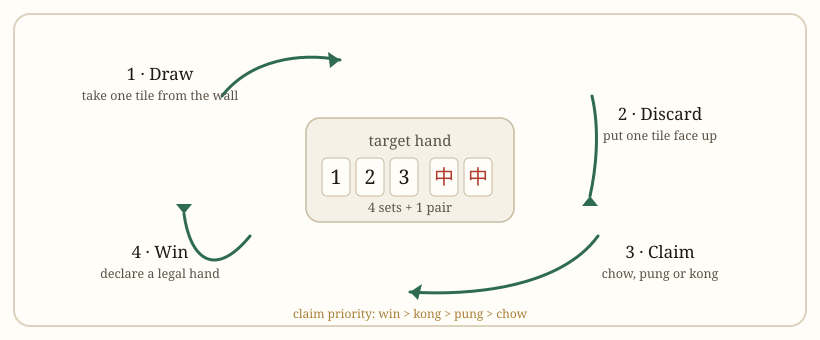

Getting started
Mahjong Rules: How to Play, Step by Step
Mahjong looks complicated because every region taught it slightly differently. The core loop is small — draw, discard, claim, build — and everything else is a local layer on top of it.
At a glance
- Players
- 4 in standard mahjong; 3 in three-player variants
- Tiles in play
- 136 without flowers, 144 with them
- Hand size
- 13 tiles, or 14 for the dealer's first turn
- Winning shape
- 4 sets + 1 pair, with two special exceptions
- Claim priority
- Win > Kong > Pung > Chow
- Round ends
- A legal win, or the wall runs out

The goal in one sentence
Build a complete hand before anyone else. A complete hand is four sets plus one pair — 14 tiles in total, or 17 in Taiwanese mahjong, which starts with 16. You may win by drawing the final tile yourself or by claiming a tile another player discards.
That shape is the constant. The variable is the minimum: Chinese Official requires 8 fan, riichi requires at least one yaku, Taiwanese requires 5 tai, and American mahjong requires a pattern printed on that year's card. A hand that is structurally complete can still be illegal. This is the single most common beginner error.
The tiles you need to recognise
Three numbered suits run 1–9, each repeated four times: characters (the Chinese numerals), circles (dots) and bamboo. On top of those sit 16 wind tiles (four each of east, south, west and north) and 12 dragon tiles (four each of red, green and white). That totals 136.
Add eight flower tiles and you reach 144. American mahjong adds eight Jokers and reaches 152. So the tile count is a quick way to identify the rules before anyone explains them. The full breakdown is on tiles and table setup.
What chow, pung and kong mean
These three actions are how you take tiles from other players and lock them into your hand. Once claimed, a set is exposed and cannot be rearranged.
| Action | What it makes | Taken from | Notes |
|---|---|---|---|
| Chow | A run of three consecutive tiles in one suit | The player to your left only | Not allowed in American mahjong; limited to once per hand in British rules |
| Pung | A triplet of identical tiles | Any player | Two copies must already be in your hand |
| Kong | Four identical tiles | Any player, or your own draw | Draws a replacement tile from the wall; an exposed kong scores separately in most fan systems |
A claimed set still counts toward the four sets you need. Claiming narrows your options, though, because the tiles you gave up are gone. That trade-off is the heart of tile efficiency.
Claiming priority: who gets the tile
When one discard could be used by several players, priority runs in a fixed order:
- Win — a player who can complete a hand always beats a claim.
- Kong — including robbing an added kong, where an opponent claims the fourth tile as it is added.
- Pung — a triplet beats a run, because a pung can be taken from any seat.
- Chow — always last, and only from the player on your left.
If two players can win on the same discard, the usual ruling gives the win to the player closest counter-clockwise to the discarder. Some tables instead make the discarder pay both winners. Sichuan blood battle is different again: after the first player wins, the hand continues until three players have won or the wall runs out.
A turn, step by step
- Draw. Take the next tile from the wall. If you have just declared a kong, take a replacement from a marked section at the end instead.
- Decide. Keep the tile or use it to complete a set; either way, your hand briefly holds 14 tiles.
- Discard. Put one tile face up in your discard pile. It is now available to everyone.
- Claim if you can. Another player may chow, pung or kong the discard before the next player draws. If nobody claims, play passes to the right.
- Win if legal. A completed 14-tile hand that also meets the style's minimum may be declared immediately, either on a draw or on a discard.
Note the asymmetry: you draw first and discard second, so a claimed tile replaces your draw rather than adding to it. That is why a claim keeps your hand at the same size.
How a hand becomes a win
Four sets plus a pair is the standard shape, but two hands are exempt from it. Seven pairs is exactly seven different pairs. Thirteen orphans is one of every terminal and honour tile, plus a duplicate of one of them. Both are described with the other legal shapes on winning hands.
Mechanically, the check is simple: can the 14 tiles be split into sets and a pair with no leftovers? A hand with 14 tiles that cannot be split is not a win, no matter how good it looks.
When the round ends without a winner
If the wall is exhausted before anyone wins, the hand is an exhaustive draw. Nobody pays, and the dealer's seat is handled by local rule: in Chinese Official the dealer keeps the seat if no non-dealer won; in riichi the dealer keeps it only when they were ready; in Sichuan play the unready players pay the ready ones instead.
There is also a mid-hand trap worth knowing: if a player's tile count is wrong — a short hand — that player cannot win, and in most rules must sit out the rest of the hand.
How seats and the dealer rotate
Seats are named east, south, west and north, and play passes counter-clockwise. East is the dealer and starts with 14 tiles. A dealer who wins keeps the seat and adds to their score; a non-dealer who wins rotates the deal to the next seat. After four dealer seats — one full round — most rules either end the game or start a new round with higher stakes.
This rotation is the reason scores cluster: the dealer wins more often simply because they act first and take an extra tile. It also means a single bad hand as dealer costs more than the same hand as a non-dealer.
Which rule set should you learn first?
If you want to play with family in a Chinese restaurant, learn Hong Kong mahjong — 13 tiles, chow allowed, and a low minimum that lets beginners win. If you want to play online, learn riichi; the client enforces the rules for you. If you are joining a club, ask for MCR and expect to score every hand.
Do not try to learn all of them at once. The tile set is shared, so the second style takes a fraction of the time the first one did. The five-axis comparison shows exactly where they diverge.
Four mistakes that cost beginners a hand
- Claiming too early. A pung on the second turn can lock a hand into a shape that cannot reach the minimum. Ask what the claim does for your final hand before you take it.
- Forgetting the minimum. A complete hand with 2 fan is a false win in MCR. Count before you call.
- Discarding a tile you already passed. In riichi this creates furiten and can lock you out of winning on that tile for the rest of the hand.
- Ignoring the discard pile. Every tile you can see is a tile that cannot be in an opponent's hand. Reading the pile is the cheapest defensive skill in the game.
Quick answers
How many tiles do you start with in mahjong?
Thirteen. The dealer takes one extra and starts with fourteen, then discards on the first turn without drawing.
Can two players win on the same tile?
At most tables only one player wins, chosen by seat order. Some house rules pay both, and Sichuan blood battle is built around multiple winners.
Is mahjong always four players?
No. Three-player mahjong removes the north wind tiles and plays faster. The core rules are unchanged.
Do you have to call "mahjong" to win?
You must declare the win clearly and immediately. Online clients do this with a button; at a table, say it before the next player acts, or the claim is void.
What to read next
Start with the tile set if the pieces still look random, or go straight to scoring if you already know the shapes and want to understand why one hand beats another.